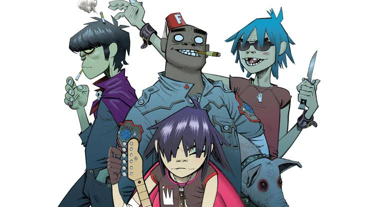

Music Taste |
|  |
It is safe to say that music is the catalyst of our relationship. If it weren't for that Noodle profile picture, I wonder where we'd be now. But the similarities didn't end there. We found out that we both love IVOS and Itchyworms and Matthew Ifield and Arctic Monkey. And then we got each other to like the music each of us liked (like when you got me to listen to Bewitched by Laufey or when I got you hooked on Panahon by Unique). The similarities extended far beyond music after that But music was pretty much where it began |